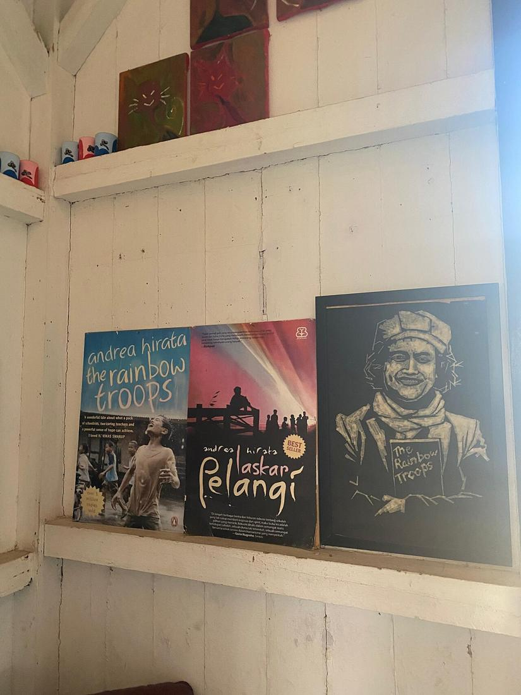
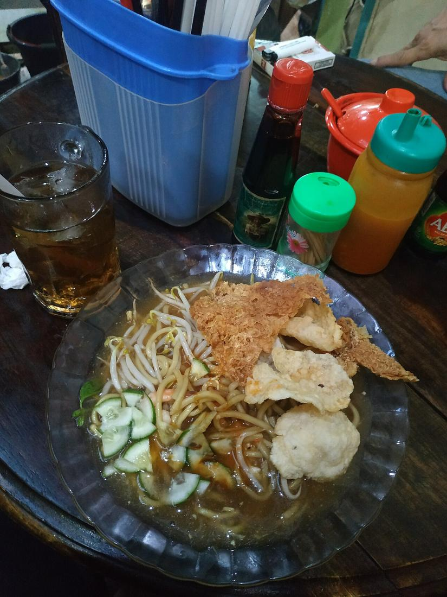
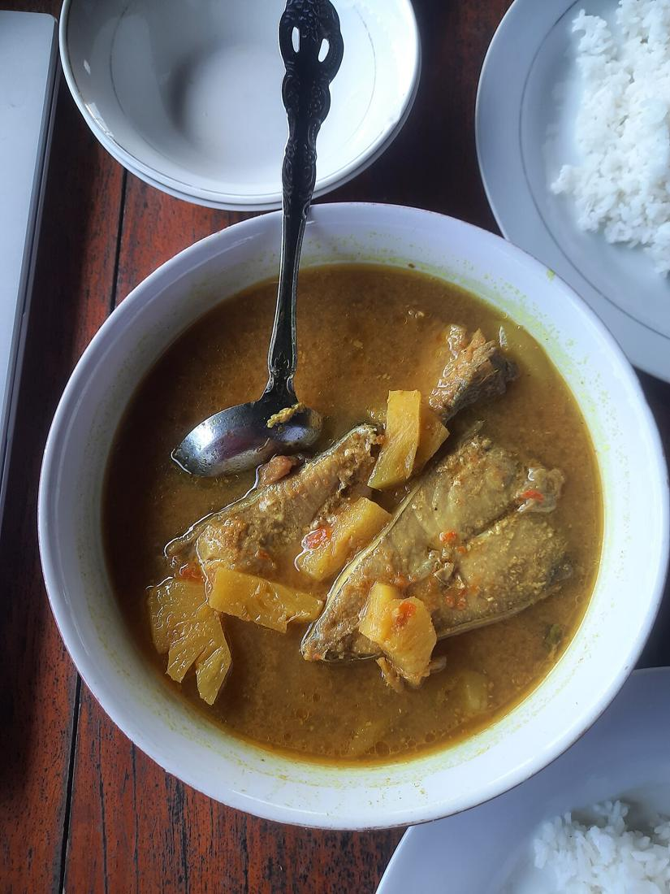

Cerita Belitung
Wisata, kuliner, dan budaya Belitung, ditulis ulang tim iTAP dari sumber yang bisa dicek. Foto dari Wikimedia Commons dicantumkan pembuat dan lisensinya.
🏝️ Wisata

Pantai Tanjung Tinggi: Granit Raksasa di Pesisir Utara Belitung
Pantai di Kecamatan Sijuk yang dikenal lewat film Laskar Pelangi, dengan bongkahan granit raksasa, pasir putih, dan air yang tenang.
Foto: Raflinoer32 · CC BY-SA 4.0
Pulau Lengkuas dan Mercusuar Tua Penjaga Selat
Pulau kecil di utara Belitung yang terkenal dengan mercusuar besi peninggalan Belanda, air jernih, dan gugusan granit.
Foto: Raden Panji Purnomo Kusrachmadi · CC BY-SA 4.0
Danau Kaolin: Biru Muda di Bekas Galian Tambang
Danau berwarna biru muda di Desa Air Raya yang terbentuk dari bekas galian tambang kaolin, cantik dipandang tapi tidak untuk berenang.
Foto: Ayufib · CC BY-SA 4.0Bukit Peramun: Hutan Kampung yang Bisa 'Diajak Ngobrol' Lewat Ponsel
Hutan kemasyarakatan di Desa Air Selumar yang dikelola warga, dengan jalur trekking di antara granit, tarsius, dan papan informasi digital berbasis QR code.

Museum Kata Andrea Hirata: Rumah Penuh Warna untuk Para Pembaca
Museum sastra di Desa Lenggang, Gantung, yang menempati rumah tua penuh warna dan menyimpan koleksi novel serta lukisan milik Andrea Hirata.
Foto: Haris Yunanda Rangkuti · CC BY-SA 4.0
Geopark Belitong: Ketika Batu, Hutan, dan Budaya Diakui Dunia
Pada April 2021, UNESCO menetapkan Belitong sebagai UNESCO Global Geopark karena kekayaan geologi, hayati, dan budayanya yang saling terkait.
Foto: Raden Panji Purnomo Kusrachmadi · CC BY-SA 4.0🍜 Kuliner

Mie Belitung: Sepiring Mi Berkuah Kental Beralas Daun Simpor
Mi kuning dengan kuah kental cokelat, udang, tahu, kentang, timun, taoge, dan emping. Hidangan sehari-hari Belitung yang lahir dari pertemuan banyak budaya.
Foto: Bagus1911 · CC BY-SA 4.0
Gangan: Kuah Kuning Belitung yang Segar Tanpa Santan
Gangan adalah masakan berkuah kuning khas Belitung. Warnanya dari kunyit, asamnya dari nanas, dan kuahnya tanpa santan.
Foto: Raflinoer32 · CC BY-SA 4.0Ngopi di Warung: Ruang Ngobrol Orang Belitung
Di Belitung, terutama Manggar yang dijuluki 'Kota 1001 Warung Kopi', warung kopi bukan sekadar tempat minum. Warung kopi juga tempat bertukar kabar, mencari kerja, dan menjalin relasi.

Makan Bedulang: Satu Dulang, Empat Orang, Banyak Pelajaran
Tradisi makan bersama khas Melayu Belitung di sekeliling dulang (nampan besar), dengan tata cara yang mengajarkan hormat kepada yang lebih tua. Ditetapkan sebagai Warisan Budaya Takbenda Indonesia tahun 2023.
Foto: Haris Yunanda Rangkuti · CC BY-SA 4.0Belacan Belitung: Terasi Udang Rebon yang Jadi Warisan Budaya
Belacan, sebutan terasi di Belitung, dibuat dari udang rebon yang dijemur, ditumbuk, lalu dikemas dalam daun. Ditetapkan sebagai Warisan Budaya Takbenda Indonesia pada 2022.
Otak-otak: Ikan Tenggiri Berbungkus Daun, Dipanggang di Atas Bara
Camilan dari ikan tenggiri yang dibungkus daun pisang lalu dipanggang, dinikmati dengan cuka atau sambal. Mudah ditemui di Belitung dan seluruh Bangka Belitung.
🥁 Budaya
Maras Taun: Syukur Panen yang Berawal dari Selat Nasik
Upacara adat Belitung untuk bersyukur atas panen padi dan memohon keselamatan di tahun berikutnya. Berawal dari Desa Selat Nasik di Pulau Mendanau dan tercatat sebagai Kekayaan Intelektual Komunal.
Muang Jong: Perahu Kecil untuk Laut dari Suku Sawang
Upacara adat selamat laut Suku Sawang di Belitung. Miniatur perahu (jong) berisi sesaji dilarung ke laut sebagai ungkapan syukur dan permohonan keselamatan.
Nirok Nanggok: Saat Sungai Surut, Satu Kampung Turun Bersama
Tradisi menangkap ikan beramai-ramai di sungai yang surut saat kemarau panjang, memakai tombak (tirok) dan keranjang rotan (tanggok), dipimpin dukun kampung.
Beripat Beregong: Adu Ketangkasan Rotan Diiringi Gong
Seni pertunjukan sekaligus adu ketangkasan khas Belitung: dua pemain saling menyabet punggung dengan rotan, diiringi gong, serunai, dan kelinang. Ditetapkan sebagai Warisan Budaya Takbenda Indonesia pada 2022.
TMP Ksatria Tumbang Ganti di Perawas: Tempat Belitung Menitipkan Para Pejuangnya
Mengenal Taman Makam Pahlawan Ksatria Tumbang Ganti di Perawas, Tanjungpandan, tempat pejuang rakyat Pertempuran Air Seruk, veteran, dan tokoh seperti H.A.S. Hanandjoeddin dimakamkan.
Jembatan Air Seruk, 25 November 1945: Saat Rakyat Belitung Berdiri dengan Parang dan Keris
Kisah kontak senjata Laskar Rakyat Belitung melawan pasukan Belanda di jembatan Air Seruk, Sijuk, yang gugurnya tiga pejuang masih diperingati warga setiap 25 November.